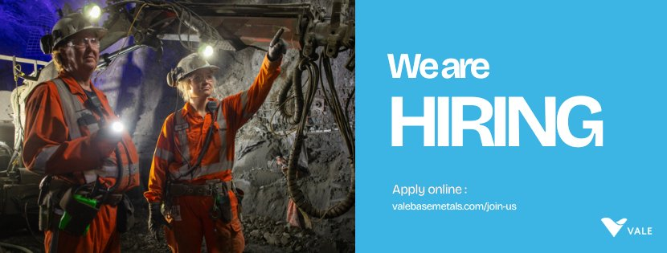
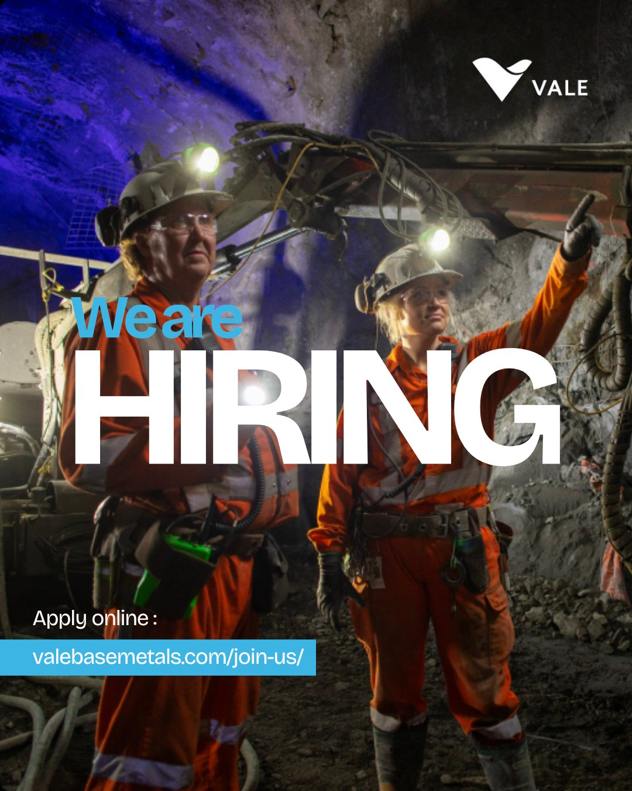
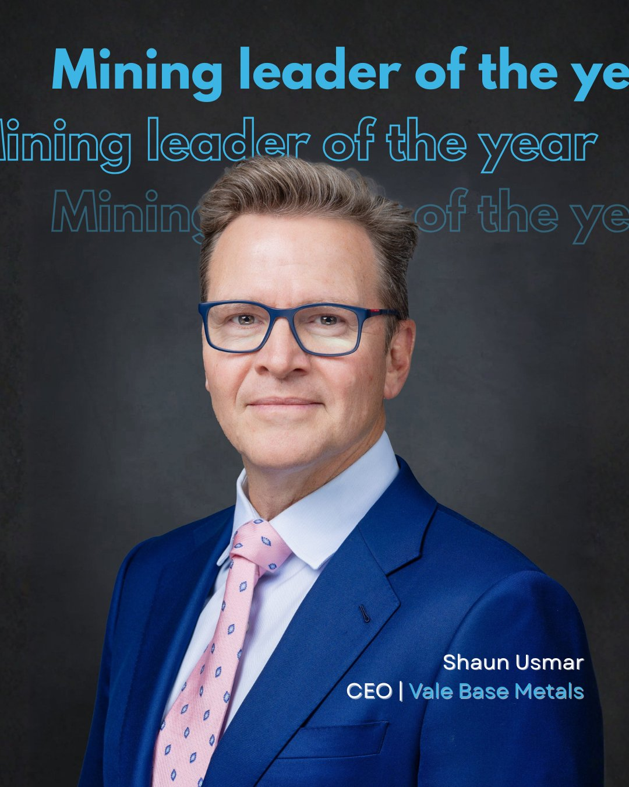
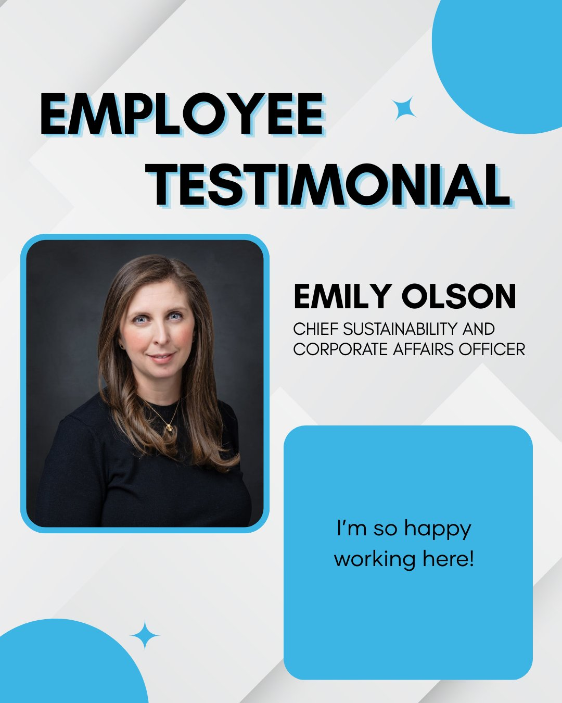
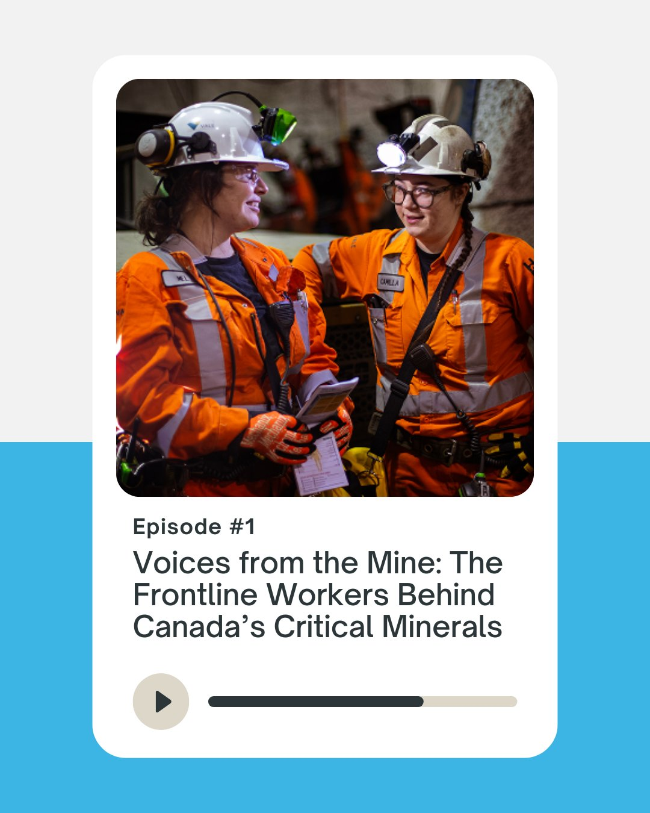
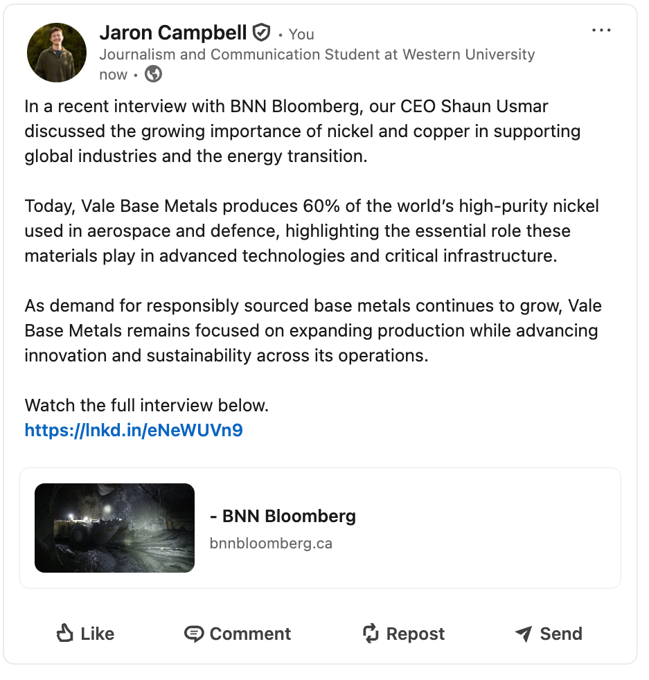

Hiring Post — Horizontal Format
This wide-format graphic is designed for LinkedIn banner posts and Twitter/X, where horizontal layouts perform best. It uses bold typography and VBM's brand colours to create an eye-catching call to action for job seekers.

Hiring Post — Vertical Format
The same campaign adapted to a vertical format for Instagram feed and Facebook mobile. The portrait orientation and dramatic mine photography are designed to stop the scroll and drive clicks to valebasemetals.com/join-us.

Mining Leader of the Year — Shaun Usmar, CEO
This graphic celebrates CEO Shaun Usmar's industry recognition. Executive spotlight posts like this build brand credibility, humanize leadership, and tend to drive strong organic engagement on LinkedIn from partners and employees alike.

Employee Testimonial — Emily Olson, Chief Sustainability Officer
Employee testimonials are a powerful recruitment and culture tool. This graphic puts a real face and name to VBM's values, showing prospective employees and stakeholders what it looks and feels like to work at the company.

Voices from the Mine — Episode #1
A promotional graphic for VBM's mock podcast series highlighting frontline workers. Designed for LinkedIn and Instagram, this post format drives listeners to new episodes while reinforcing VBM's commitment to the people behind Canada's critical minerals industry.

LinkedIn Post — BNN Bloomberg CEO Interview
This is a mock LinkedIn post amplifying a BNN Bloomberg media placement featuring VBM's CEO. It demonstrates how I would write in VBM's corporate brand voice to extend the reach of a high-value earned media moment, including strategic copy, link placement, and a compelling hook for the LinkedIn algorithm.